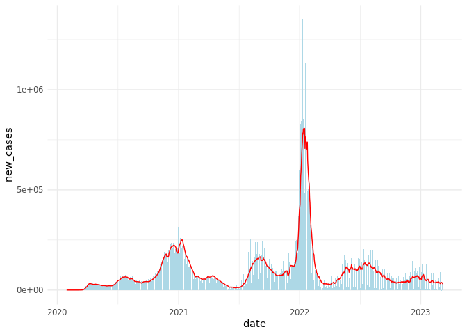
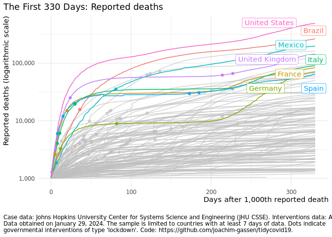

Disclaimer
I am an applied economist studying the economic effects of regulatory interventions on corporate transparency and leading the Open Science Data Center (OSDC) of the TRR 266 Accounting for Transparency, which is funded by the German Science Foundation (DFG). The OSDC has the objective to make research transparent in a way that others can contribute and collaborate.
This is the spirit that motivated me to set up this package. I am clearly no epidemiologist so I will abstain from from providing infrastructure for analyzing the spread of the disease or estimating the effects of non-pharmaceutical interventions. Instead this package serves the purpose to facilitate the use of various Covid-19 related data sources with a special focus on non-pharmaceutical interventions.
In that way, I hope that it might be helpful for others that are interested in doing research on the Covid 19 pandemic by promoting the benefits of open science.
Why yet another package on Covid-19?
There are several packages that provide data and infrastructure related to Covid-19. Two prominent cases are:
-
{nCov2019}: This package has a focus on Chinese data but also contains data on other countries and regions. It contains a shiny dashboard. -
{conronavirus}: This package provides the Johns Hopkins University CSSE dataset together with a dashboard
Additional R related resources on Covid-19 can be found here and here.
Other than the packages mentioned above, the key objective of the {tidycovid19} package is to provide transparent access to various data sources at the country-day level, including data on governmental interventions and on behavioral response of the public. It does not contain any data per se. Instead, it provides functions to pull data from publicly available authoritative sources. The sources and the data are documented by additional data frames included in the package. New: While the combined data frame generated by download_merged_data() aggregates data at the country-day level, some functions also provide sub-country level data on request.
For those interested in speedy downloads it alternatively provides the option to download from the cached data in this repo (stored in the directory cached_data). The cached data is updated daily.
The Data
Currently, the package offers the following functions to download data:
-
download_jhu_csse_covid19_data(): Downloads and tidies Covid-19 data from the Johns Hopkins University CSSE Github Repo. This data has developed to a standard resource for researchers and the general audience interested in assessing the global spreading of the virus. The data is provided at country and sub-country levels. -
NEW:
download_ecdc_covid19_data(): Downloads and tidies Covid-19 case data provided by the European Centre for Disease Prevention and Control. The data is updated daily and contains the latest available public data on the number of new Covid-19 cases reported per day and per country. -
NEW:
download_owid_testing_data(): Downloads and tidies testing data collected by the ‘Our World in Data’ team. This team systematically collects data on Covid-19 testing from multiple national sources. -
download_acaps_npi_data(): Downloads and tidies the Government measures dataset provided by the Assessment Capacities Project (ACAPS). These data allow researchers to study the effect of non-pharmaceutical interventions on the development of the virus. -
download_oxford_npi_data(): Downloads and tidies data from the Oxford Covid-19 Government Response Tracker, an alternative data source for governmental interventions. Currently, I do not include the financial measures of this data set and also do not include its data in the merged data file (see below) as I view the ACAPS data to be better suited (this blog post details why). -
download_apple_mtr_data(): Downloads Mobility Trends Reports provided by Apple related to Covid-19. The data is provided at country and sub-country levels. -
download_google_cmr_data(): Downloads Google COVID-19 Community Mobility Reports data. As of April 17, Google provides a nice and clean CSV file containing country-day and region-day data. This makes the PDF scraping code that used to be part of this package obsolete. If you are interested in it for didactic reasons, you can still find it in the git hstory. This data is available at the country, regional and U.S. county level. -
download_google_trends_data(): Downloads and tidies Google Trends data on the search volume for the term “coronavirus” (Thank you to Yan Ouaknine for bringing up that idea!). This data can be used to assess the public attention to Covid-19 across countries and over time within a given country. The data is available at the country, regional and city level but availability varies across countries as Google Trends provides only more granular data for regions with high search volumes. -
download_wbank_data(): Downloads and tidies additional country level information provided by the World Bank using the {wbstats} package. These data allow researchers to calculate per capita measures of the virus spread and to assess the association of macro-economic variables with the development of the virus. -
download_merged_data(): Downloads all data sources and creates a merged country-day panel.
How to Use the Package
The idea is simple. Load the data using the functions above and code away. So, for example:
# Suggestion by AndreaPi (issue #19)
library(tidyverse)
library(tidycovid19)
library(zoo)
df <- download_merged_data(cached = TRUE, silent = TRUE)
df %>%
filter(iso3c == "ITA") %>%
mutate(
new_cases = confirmed - lag(confirmed),
ave_new_cases = rollmean(new_cases, 7, na.pad=TRUE, align="right")
) %>%
filter(!is.na(new_cases), !is.na(ave_new_cases)) %>%
ggplot(aes(x = date)) +
geom_bar(aes(y = new_cases), stat = "identity", fill = "lightblue") +
geom_line(aes(y = ave_new_cases), color ="red") +
theme_minimal()
The data comes with two meta data sets that describe the data. The data frame tidycovid19_data_sources provides short descriptions and links for each data source used by the package. The data frame tidycovid19_variable_defintions provides variable definitions for each variable included in the merged country-day data frame provided by download_merged_data():
df <- tidycovid19_variable_definitions %>%
select(var_name, var_def)
kable(df) %>% kableExtra::kable_styling()| var_name | var_def |
|---|---|
| iso3c | Country name |
| country | ISO3c country code as defined by ISO 3166-1 alpha-3 |
| date | Calendar date |
| confirmed | Confirmed Covid-19 cases as reported by JHU CSSE (accumulated) |
| deaths | Covid-19-related deaths as reported by JHU CSSE (accumulated) |
| recovered | Covid-19 recoveries as reported by JHU CSSE (accumulated) |
| ecdc_cases | Covid-19 cases as reported by ECDC (accumulated) |
| ecdc_deaths | Covid-19-related deaths as reported by ECDC (accumulated) |
| total_tests | Accumulated test counts as reported by Our World in Data |
| tests_units | Definition of what constitutes a ‘test’ |
| soc_dist | Number of social distancing measures reported up to date by ACAPS, net of lifted restrictions |
| mov_rest | Number of movement restrictions reported up to date by ACAPS, net of lifted restrictions |
| pub_health | Number of public health measures reported up to date by ACAPS, net of lifted restrictions |
| gov_soc_econ | Number of social and economic measures reported up to date by ACAPS, net of lifted restrictions |
| lockdown | Number of lockdown measures reported up to date by ACAPS, net of lifted restrictions |
| apple_mtr_driving | Apple Maps usage for driving directions, as percentage*100 relative to the baseline of Jan 13, 2020 |
| apple_mtr_walking | Apple Maps usage for walking directions, as percentage*100 relative to the baseline of Jan 13, 2020 |
| apple_mtr_transit | Apple Maps usage for public transit directions, as percentage*100 relative to the baseline of Jan 13, 2020 |
| gcmr_retail_recreation | Google Community Mobility Reports data for the frequency that people visit retail and recreation places expressed as a percentage*100 change relative to the baseline period Jan 3 - Feb 6, 2020 |
| gcmr_grocery_pharmacy | Google Community Mobility Reports data for the frequency that people visit grocery stores and pharmacies expressed as a percentage*100 change relative to the baseline period Jan 3 - Feb 6, 2020 |
| gcmr_parks | Google Community Mobility Reports data for the frequency that people visit parks expressed as a percentage*100 change relative to the baseline period Jan 3 - Feb 6, 2020 |
| gcmr_transit_stations | Google Community Mobility Reports data for the frequency that people visit transit stations expressed as a percentage*100 change relative to the baseline period Jan 3 - Feb 6, 2020 |
| gcmr_workplaces | Google Community Mobility Reports data for the frequency that people visit workplaces expressed as a percentage*100 change relative to the baseline period Jan 3 - Feb 6, 2020 |
| gcmr_residential | Google Community Mobility Reports data for the frequency that people visit residential places expressed as a percentage*100 change relative to the baseline period Jan 3 - Feb 6, 2020 |
| gtrends_score | Google search volume for the term ‘coronavirus’, relative across time with the country maximum scaled to 100 |
| gtrends_country_score | Country-level Google search volume for the term ‘coronavirus’ over a period starting Jan 1, 2020, relative across countries with the country having the highest search volume scaled to 100 (time-stable) |
| region | Country region as classified by the World Bank (time-stable) |
| income | Country income group as classified by the World Bank (time-stable) |
| population | Country population as reported by the World Bank (original identifier ‘SP.POP.TOTL’, time-stable) |
| land_area_skm | Country land mass in square kilometers as reported by the World Bank (original identifier ‘AG.LND.TOTL.K2’, time-stable) |
| pop_density | Country population density as reported by the World Bank (original identifier ‘EN.POP.DNST’, time-stable) |
| pop_largest_city | Population in the largest metropolian area of the country as reported by the World Bank (original identifier ‘EN.URB.LCTY’, time-stable) |
| life_expectancy | Average life expectancy at birth of country citizens in years as reported by the World Bank (original identifier ‘SP.DYN.LE00.IN’, time-stable) |
| gdp_capita | Country gross domestic product per capita, measured in 2010 US-$ as reported by the World Bank (original identifier ‘NY.GDP.PCAP.KD’, time-stable) |
| timestamp | Date and time where data has been collected from authoritative sources |
There are more examples on how to code in the code file in the main directory with the revealing name code_examples.R. Explore and reuse!
Visualization
The focus of the package lies on data collection and not on visualization as there are already many great tools floating around. Regardless, there are three functions that allow you to visualize some of the key data that the package provides.
Plot Covid-19 Spread over Event Time
The function plot_covid19_spread() allows you to quickly visualize the spread of the virus in relation to governmental intervention measures. It is inspired by the insightful displays created by John Burn-Murdoch from the Financial Times and offers various customization options.
#remotes::install_github("joachim-gassen/tidycovid19")
library(tidycovid19)
merged <- download_merged_data(cached = TRUE, silent = TRUE)
plot_covid19_spread(
merged, highlight = c("ITA", "ESP", "GBR", "FRA", "DEU", "USA"),
intervention = "lockdown", edate_cutoff = 60
)
Plot Covid-19 Stripes
Another option to visualize the spread of Covid-19, in particular if you want to compare many countries, is to produce a stripes-based visualization. Meet the Covid-19 stripes:

Again, the function comes with many options. As an example, you can easily switch to a per capita display:

Or single out countries that you are interested in
plot_covid19_stripes(
type = "confirmed",
countries = c("ITA", "ESP", "FRA", "GBR", "DEU", "USA"),
sort_countries = "countries"
)
Map Covid-19
Finally, as Covid-19 has become a truly world-wide pandemic, I decided to also include a basic mapping function. map_covid19() allows you to map the spread of the virus at a certain date both world-wide …

… or for certain regions.

If you have enough time (takes several minutes), you can also create an animation to visualize the spread of the virus over time.

Again, you can customize the data that you want to plot and of course you can also modify the plot itself by using normal ggplot syntax.
Shiny App
Sorry, I could not resist. The options of the plot_covid19_spread() make the implementation of a shiny app a little bit to tempting to pass. The command shiny_covid19_spread() starts the app. Click on the image to be taken to the online app. You can use it to customize your plot_covid19_spread() display as it allows copying the plot generating code to the clipboard, thanks to the fine {rclipboard} package. You can now also customize the app by providing plot_covid19_spread() options as a list to the plot_options parameter.

As the shinyapps.io server has had some issues with exhausting connections, you can also use this alternative server.
Blog posts
NEW: An intro blog post providing a quick walk-through of the package.
A blog post on the new visuals of the package.
A blog post on the visualizer degrees of freedom that are inherent in a plot of the Covid-19 spread.
A blog post on the PDF scraping of the new Google Covid-19 Community Movement Reports.
A somewhat dated blog post comparing the ACAPS and Oxford data on governmental interventions.
An older blog post that showcases some descriptive visuals to see what one can do with the data retrieved by this package.